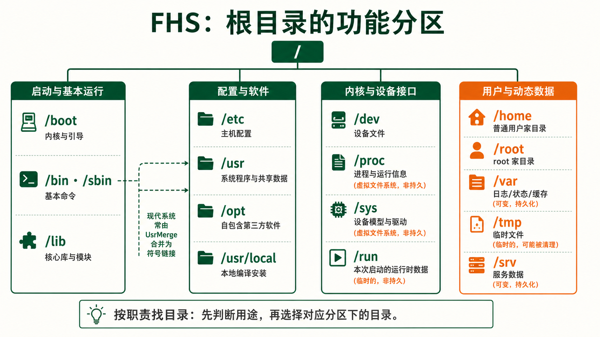
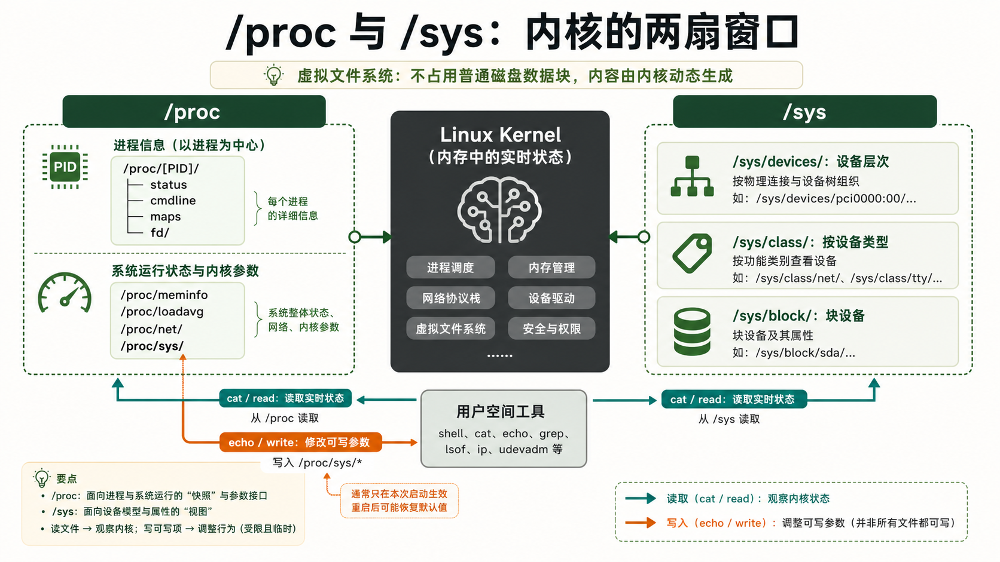
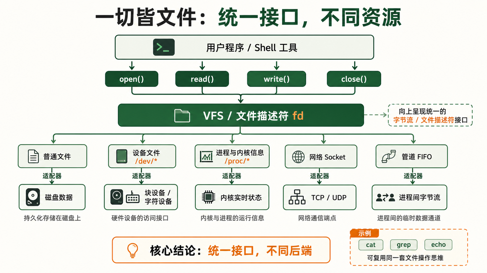

1为什么需要 FHS 标准
统一目录布局 —— 不是"约定俗成"，是"工业标准"
核心没有标准的混乱世界
想象一个没有 FHS 的世界：发行版 A 把用户安装的程序放在 /Programs，发行版 B 放在 /opt/userapps，发行版 C 放在 /usr/local/share/bin。你写了一段自动化脚本，里面有个硬编码的路径 /usr/bin/nginx——然后换了一台服务器就找不到 Nginx 了。
更糟的是：每个运维工程师换工作后都要重新学习"这个公司用的猜谜规则"，每个软件的安装脚本都要写死一坨 if 判断不同的目录布局，每次排查问题都要翻上千页文档才能定位日志和配置文件——而 FHS 让这一切变成历史。
FHS 解决了什么问题
FHS (Filesystem Hierarchy Standard) 是一份精准的规范文档，定义了 Linux 系统中每个目录应该放什么、不应该放什么。它不是 Linux 内核的一部分，但被所有主流发行版遵守。你可以不知道使用了什么发行版——但只要它遵循 FHS，你就知道：
- 配置文件一定在
/etc——想改 Nginx？直接vim /etc/nginx/nginx.conf - 日志一定在
/var/log——想查错误？直接tail -f /var/log/syslog - 可执行程序一定在
/usr/bin或/bin——装了新工具？直接调用，它一定在 PATH 里 - 临时文件一定在
/tmp——重启后自动清空，不需要手动清理
FHS 的规范文本由 Linux 基金会维护 (refspecs.linuxfoundation.org/fhs.shtml)。目前最新版本是 FHS 3.0 (2015年发布)。虽然不常更新——因为它的设计太成功了，不需要改。大多数现代 Linux 发行版 (包括 systemd 系统) 在 FHS 基础上做了少量扩展 (
/run 目录就是例子)，但整体框架始终保持一致。
# 验证你的系统遵循 FHS
ls / # 根目录——这是所有路径的起点
man hier # 很多系统内置了文件系统层次的手册页
man 7 file-hierarchy # systemd 系统的文件层次文档
2根目录逐层详解 —— 每个目录的"为什么"
核心系统目录 —— 没有它们系统无法启动
详解/bin —— 基本用户命令 (现在多链接到 /usr/bin)
存放系统启动和维护所需的最基本命令，即使 /usr 没有挂载也能执行。传统上包括 cat、ls、cp、mv、rm、sh、bash 等。现代 Linux 发行版 (如 Ubuntu 20.04+) 已将 /bin 和 /sbin 合并为指向 /usr/bin 和 /usr/sbin 的符号链接——这是 UsrMerge 计划的结果。
ls -l /bin # 输出类似: /bin -> usr/bin (这是一个符号链接)
ls -l /sbin # 输出类似: /sbin -> usr/sbin/boot —— 引导的命脉
存放 Linux 内核文件 (vmlinuz-*)、初始 RAM 磁盘镜像 (initrd.img-* 或 initramfs-*)、GRUB 引导加载器配置文件 (/boot/grub/)。这个目录一般单独分区 (约 500MB~1GB)。如果 /boot 分区满了——系统将无法安装新内核更新。查看方式：df -h /boot。
ls /boot
# vmlinuz-5.15.0-91-generic # 压缩后的内核镜像
# initrd.img-5.15.0-91-generic # 初始 RAM 磁盘
# grub/ # GRUB 配置目录
# System.map-5.15.0-91-generic # 内核符号表 (调试用)/dev —— 万物皆设备文件
这是 Linux "一切皆文件"哲学最直观的体现。在 /dev 下，每个设备都以文件的形式存在：
| 设备文件 | 类型 | 说明 |
|---|---|---|
/dev/sda | 块设备 | 第一块 SCSI/SATA 磁盘 (sdb=第二块...) |
/dev/sda1 | 块设备 | 第一块磁盘的第一个分区 |
/dev/nvme0n1 | 块设备 | 第一块 NVMe SSD (现代命名) |
/dev/tty | 字符设备 | 当前终端 |
/dev/null | 字符设备 | "黑洞"——写入的数据被丢弃，读取永远返回 EOF |
/dev/zero | 字符设备 | 无限提供 null 字节 (0x00) |
/dev/random | 字符设备 | 真随机数 (基于环境噪声，熵不够时阻塞) |
/dev/urandom | 字符设备 | 伪随机数 (非阻塞，适合大多数场景) |
不要直接对
/dev/sda 做操作！dd if=/dev/zero of=/dev/sda 会直接覆写磁盘数据，不可恢复。这不是"删除文件"——这是把磁盘上每一块数据都填充为零。
/lib —— 核心共享库和内核模块
存放系统启动和 /bin、/sbin 中命令所需的共享库 (.so 文件)，以及内核模块 (/lib/modules/内核版本/)。类似 /bin，现代系统已将 /lib 链接到 /usr/lib。
# 查看命令依赖哪些共享库
ldd /bin/ls
# 输出各 .so 库的路径
# 查看已加载的内核模块
lsmod
ls /lib/modules/$(uname -r)/ # 所有可用内核模块系统配置与守护目录 —— 运维的日常工作区
详解/etc —— 一切配置的归宿
这是运维工程师最熟悉的目录。FHS 规定 /etc 存放"主机特定的系统配置"——每一台服务器的个性化设置都在这里。它不是"可执行文件"，不是"库文件"，不是"运行时数据"——它只放配置。
关键子目录和文件：
| 路径 | 内容 | 什么时候你会用到 |
|---|---|---|
/etc/nginx/nginx.conf | Nginx 全局配置 | 配置 Web 服务器 |
/etc/ssh/sshd_config | SSH 服务端配置 | 修改 SSH 端口、禁用密码登录 |
/etc/passwd | 用户账户信息 | 查看所有用户 |
/etc/shadow | 用户密码哈希 (仅 root 可读) | 密码策略 |
/etc/fstab | 文件系统挂载表 | 配置开机自动挂载磁盘 |
/etc/crontab | 系统级定时任务 | 设置定期执行的任务 |
/etc/hosts | 静态主机名-IP 映射 | 本地 DNS 覆盖 |
/etc/resolv.conf | DNS 解析器配置 | 设置 DNS 服务器 |
/etc/systemd/system/ | systemd 服务单元文件 | 管理自启动服务 |
/etc/apt/sources.list | APT 软件源列表 (Debian系) | 修改软件源镜像 |
/etc/environment | 系统级环境变量 | 全局代理/语言设置 |
# etc 目录是 git 仓库的最佳候选
cd /etc; git init; git add .; git commit -m "baseline"
# 每次改配置后 git diff 看变化，git commit 记录原因
# 这是基础设施即代码 (IaC) 的最简实践/opt —— 第三方软件的"独立别墅"
为那些不遵循 FHS 目录结构的第三方软件保留。典型的用途：Google Chrome 装在 /opt/google/chrome/，手动下载的 JDK 解压到 /opt/jdk-17/。opt = optional，意为"可选的附加软件"。与 /usr/local 的区别：/opt 倾向于"供应商打包的、自包含的"软件，每个软件一个子目录；/usr/local 倾向于"从源码编译安装的"按传统 FHS 结构组织的软件。
/srv —— 服务数据目录
存放系统提供服务的站点特定数据。比如 Web 服务器数据放在 /srv/www/，FTP 文件在 /srv/ftp/。不过很多运维习惯把网站放在 /var/www/——这是历史惯性，两者都常见。
虚拟文件系统 —— 内核在"说话"
深入/proc —— 内核暴露的进程与系统信息
proc 是一个伪文件系统 (pseudo-filesystem)，不占用磁盘空间——所有内容都在内存中，由内核动态生成。每一次 cat /proc/cpuinfo 都是在向内核发出请求："给我当前 CPU 的完整信息"。/proc/[PID]/ 子目录里是该进程的全部属性——文件描述符 (fd/)、内存映射 (maps)、环境变量 (environ)、命令行 (cmdline)。
cat /proc/cpuinfo # CPU 型号、核心数、缓存大小
cat /proc/meminfo # 内存使用详情 (MemTotal/MemFree/MemAvailable)
cat /proc/version # 内核版本字符串
cat /proc/uptime # 系统运行时间 (秒) 和空闲时间
cat /proc/loadavg # 系统负载 (1/5/15 分钟平均值)
cat /proc/filesystems # 内核支持的文件系统类型
# 查看进程信息 (用当前 shell 的 PID 举例)
ls /proc/$$/ # 列出当前进程的所有属性
cat /proc/$$/status # 进程状态、内存、线程数
cat /proc/$$/cmdline # 进程的完整命令行/sys —— 更结构化的内核接口
/sys 是 /proc 的"升级版"——比 /proc 更结构化、更专注于设备驱动模型。它把内核对象按类别组织为目录树：/sys/class/ (按设备类型)、/sys/block/ (块设备)、/sys/devices/ (所有设备的底层层次结构)、/sys/kernel/ (内核参数)。很多系统工具 (如 lsblk、udevadm) 的数据源就是 /sys。
ls /sys/class/net/ # 列出所有网络接口
cat /sys/class/net/eth0/address # 查看网卡 MAC 地址
cat /sys/class/thermal/thermal_zone0/temp # CPU 温度 (需除以1000)
ls /sys/block/ # 列出所有块设备
/proc：进程信息 + 运行时系统信息，适合 shell 日常查看
/sys：设备模型 + 驱动参数，适合程序读取和脚本自动化
两者都是内核的"窗口"——修改其中的可写文件可以实时调整内核行为。例如
echo 1 > /proc/sys/net/ipv4/ip_forward 可以开启 IP 转发。
用户数据与动态数据 —— 你的"家"和日志"仓库"
详解/home —— 每个用户的家
每个普通用户在这里有自己的子目录 (/home/alice, /home/bob)。用户的所有个人文件、配置 (以 .bashrc、.ssh/ 等形式)、下载都放在这里。目录名就是用户名。一个常见的最佳实践：把 /home 挂载到独立分区或网络存储——/home 里的数据需要备份，而系统文件 (/usr、/bin) 可以随时重装恢复。
/root —— root 用户的例外
root 用户的家目录不在 /home/root (那太不"特殊"了)。它直接放在 /root，且权限为 drwx------——只有 root 自己能访问。为什么这么设计？因为早期 UNIX 系统可能在单用户模式下 /home 尚未挂载，但 root 需要可用的家目录。
/usr —— 用户级程序与数据 (最大的目录)
usr = Unix System Resources (不是 user!)——这是系统中最大的目录，包含所有用户可用的程序和库：
| 子目录 | 存放内容 | 示例 |
|---|---|---|
/usr/bin | 绝大多数用户命令 | python3、node、vim、git |
/usr/sbin | 系统管理命令 (非必需启动) | sshd、httpd、useradd |
/usr/lib | 共享库和内部二进制 | libcrypto.so、systemd 组件 |
/usr/share | 架构无关的共享数据 | man 手册、文档、图标、时区数据 |
/usr/local | 本地编译安装的软件 (优先级高于 /usr) | 你从源码编译的 nginx、自行安装的 Go |
/usr/include | C/C++ 头文件 | stdio.h、stdlib.h |
/usr/src | 内核源码 (可选) | linux-headers-* |
/usr/local 的优先级高于 /usr——在 PATH 环境变量中，/usr/local/bin 通常排在 /usr/bin 前面。这意味着如果你从源码编译了 Nginx 放到 /usr/local/bin/nginx，当你敲 nginx 时会优先执行你编译的版本而不是系统自带的版本。这是你"覆盖"系统命令的安全方式——系统包管理器 (apt/yum) 不会碰 /usr/local 里的任何东西。
/var —— 动态可变数据
var = variable。这里存放的是系统运行过程中不断变化的数据：日志、邮件队列、打印队列、数据库文件、网站内容。这是除 /usr 外另一个增长最快的目录。
| 路径 | 内容 | 运维关注点 |
|---|---|---|
/var/log/ | 系统日志 | syslog、auth.log、kern.log——排查问题的第一站 |
/var/log/nginx/ | Nginx 访问日志和错误日志 | access.log 分析流量，error.log 排查 502 |
/var/spool/ | 待处理数据 (邮件/打印等) | cron 任务、邮件队列 |
/var/lib/ | 应用状态数据 | MySQL 数据库文件、Docker 数据、dpkg 数据库 |
/var/cache/ | 应用缓存 | apt 下载的 .deb 包、字体缓存 |
/var/tmp/ | 持久临时文件 | 与 /tmp 不同——重启不会清空 |
# 查看日志的日常操作
tail -f /var/log/syslog # 实时追踪系统日志
journalctl -u nginx --since "10 min ago" # systemd 日志 (二进制日志，比 syslog 更现代)
du -sh /var/log/* # 查看各日志文件大小/tmp 和 /run —— 临时性的两种形态
| 目录 | 存储 | 生命周期 | 可靠性 |
|---|---|---|---|
/tmp | 磁盘 (通常是 tmpfs 内存文件系统) | 系统重启后清空 (或超过 10 天未访问) | 任何用户可写，全球可读——不要放敏感文件 |
/run | tmpfs (纯内存) | 系统启动时创建，重启后完全消失 | root-only——PID 文件、锁文件、socket 文件 |
echo $TMPDIR # 查看当前临时目录
mktemp -d # 创建一个安全的临时目录 (推荐)
ls /run/ # systemd 和守护进程的运行时数据
3"一切皆文件"—— Linux 最深刻的哲学实践
用统一接口操作一切资源
哲学这个哲学的威力
在 Linux 中，"文件"是一个抽象概念。在这个抽象覆盖下，你可以用同一组系统调用 (open()、read()、write()、close()) 来操作磁盘文件、读取进程信息、发送网络数据、控制硬件设备。这意味着：
- 不需要新的 API：读取进程状态和读取文本文件用同一个
read()系统调用 - 不需要新的工具：
cat、grep、echo这些处理文本文件的命令，同样可以处理设备、进程、网络 - 不需要新的思维模型：学一次"文件操作"，就学会了操作 Linux 的一切
实例一：设备即文件
dd if=/dev/zero of=testfile bs=1M count=100 # 从 zero 设备读取 100MB 空数据写入文件
cat testfile > /dev/null # 读取文件并丢弃——但底层经过了完整的文件→设备系统调用
ls -l /dev/sda # brw-rw---- b=块设备
ls -l /dev/tty # crw-rw-rw- c=字符设备实例二：进程即目录
ls /proc/1/ # PID 1 (init/systemd) 的"文件夹"
cat /proc/1/status # 进程状态 (相当于 process.read())
cat /proc/1/maps # 内存映射 (进程的"地址空间地图")
cat /proc/1/cmdline # 进程的完整命令行 (被 NUL 分隔)
ls -l /proc/1/fd/ # 进程打开的所有文件描述符实例三：网络即文件
cat /proc/net/tcp # 当前所有 TCP 连接 (十六进制显示)
cat /proc/net/udp # 当前所有 UDP 连接
cat /proc/net/dev # 每个网络接口的收发包统计▶ /proc/net/tcp 输出片段
sl local_address rem_address st tx_queue rx_queue ...
0: 00000000:0050 00000000:0000 0A 00000000:00000000 ...
1: 0100007F:0016 00000000:0000 0A 00000000:00000000 ...
# local_address=0.0.0.0:80 (LISTENING)
# local_address=127.0.0.1:22 (LISTENING)Python 代码
open('/proc/cpuinfo').read() 和 open('myfile.txt').read() 使用了完全相同的调用。你的程序不需要"系统信息 API"和"文件 API"两套接口——一个 open() 就解决了所有问题。这就是 Unix 哲学中的"统一的接口胜过专门的接口"。
实例四：内核参数实时调整
某些 /proc/sys/ 下的文件是可写的。用 echo 写入一个值，就能实时改变内核行为——不需要重启、不需要重新编译内核。
# 开启 IP 转发 (把 Linux 变成路由器)
echo 1 > /proc/sys/net/ipv4/ip_forward
# 禁用 ping 响应
echo 1 > /proc/sys/net/ipv4/icmp_echo_ignore_all
# 查看当前值
cat /proc/sys/net/ipv4/ip_forward通过
/proc/sys/ 修改的内核参数在重启后会恢复默认值。要永久生效，需要写入 /etc/sysctl.conf 或 /etc/sysctl.d/ 目录下的配置文件，然后执行 sysctl -p。
注解
API · Application Programming Interface 应用程序编程接口
DNS · Domain Name System 域名系统
FTP · File Transfer Protocol 文件传输协议
GRUB · GNU GRand Unified Bootloader GNU 统一引导加载器
IP · Internet Protocol 网际协议
PID · Process Identifier 进程标识符
TCP · Transmission Control Protocol 传输控制协议